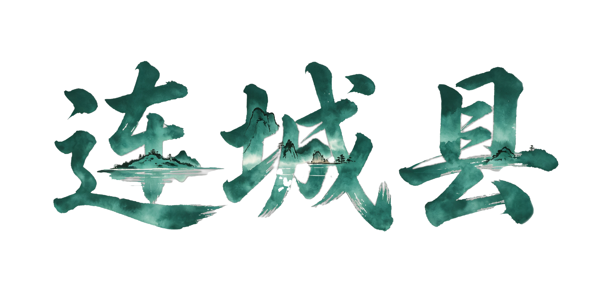
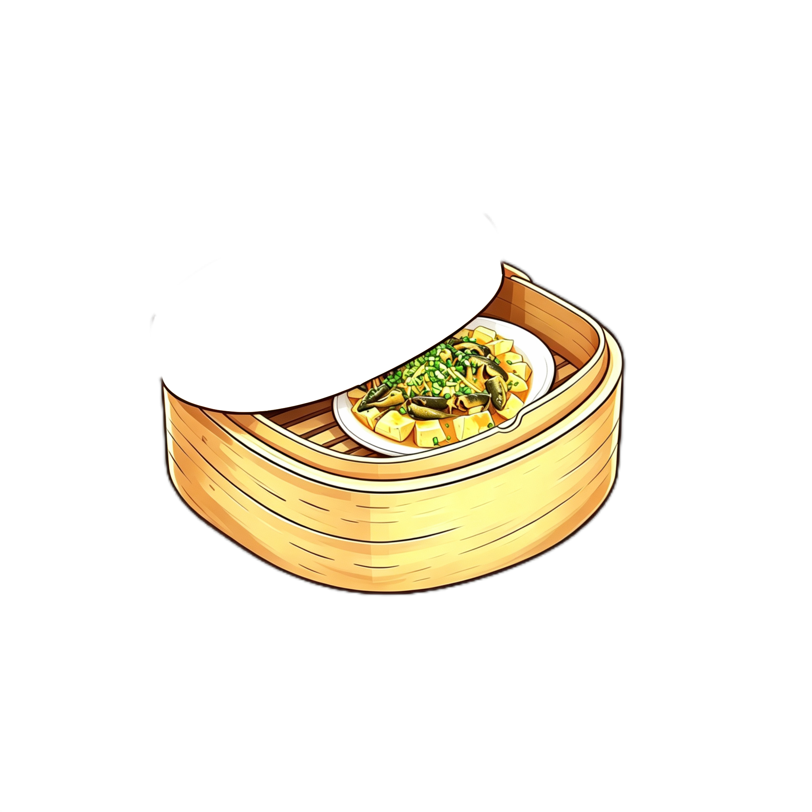
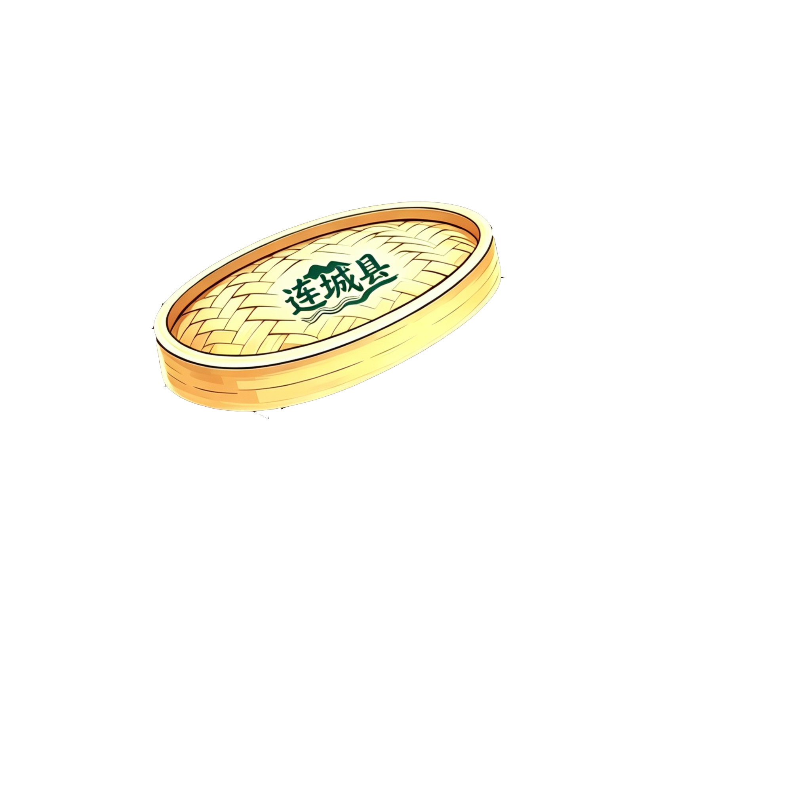

连城地处闽西腹地，是“中国客家美食名城”与“中国客家硒都”。自明清以来便是闽粤赣商贸要道，八方商旅往来，饮食文化在此交融创新，形成了“清鲜细腻、药膳同源、物尽其用”的独特风格。境内冠豸山钟灵毓秀，富硒沃土为美食传承提供了得天独厚的自然根基。


👆 点击打开盲盒
连城最负盛名的当属“连城白鹜鸭”，被誉为“中国唯一药用鸭”，清代道光年间即为贡品，文火慢炖成白鸭汤，汤色澄黄清醇、不腥不腻。此外，“红心地瓜干”位列“闽西八大干”之首，“涮九品”以客家米酒慢涮牛九部位，脆嫩弹牙，酒香浓郁。连城美食不走浓油赤酱路线，靠好食材与客家千年智慧，让每一口都清爽滋养。
连城美食